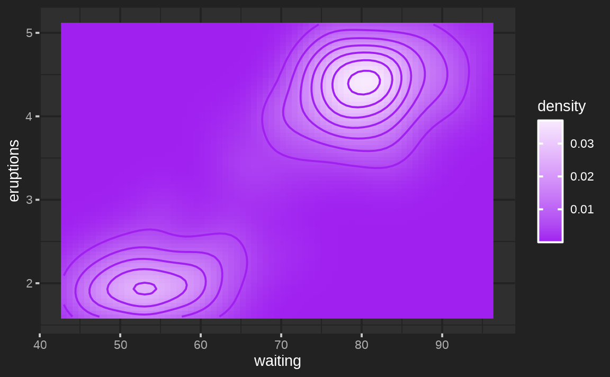
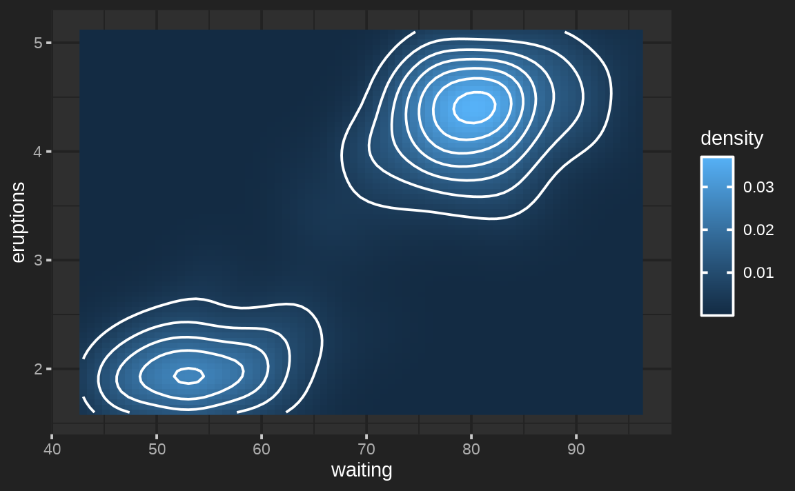
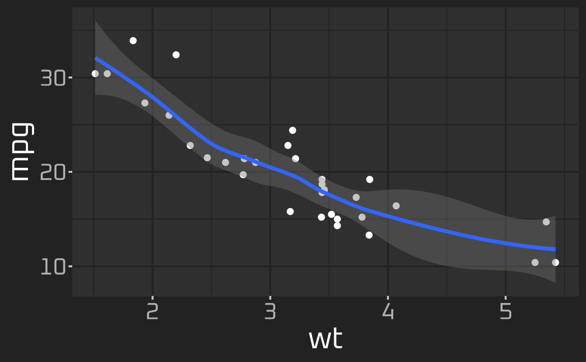
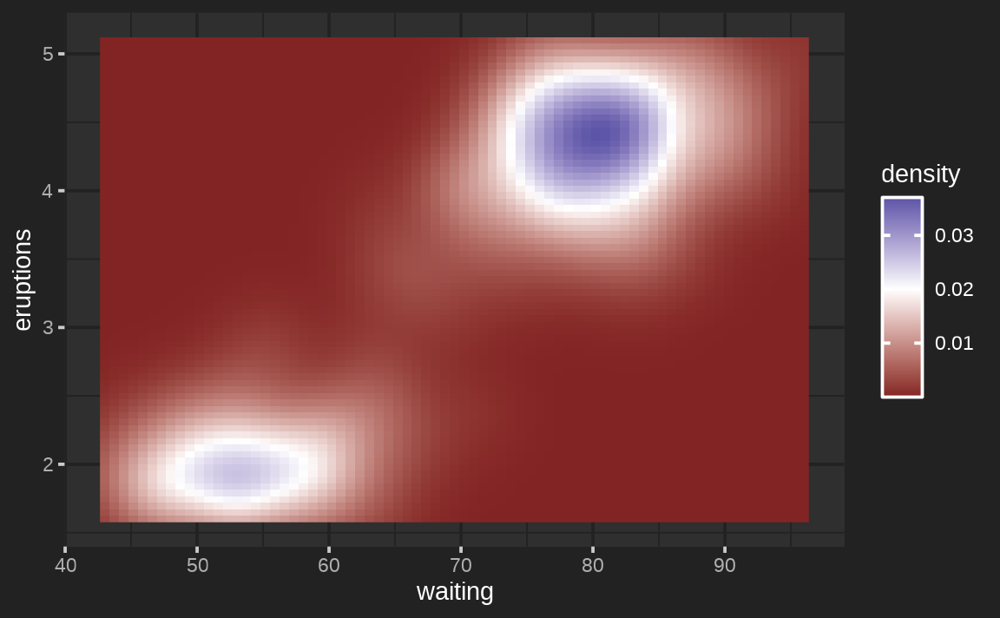
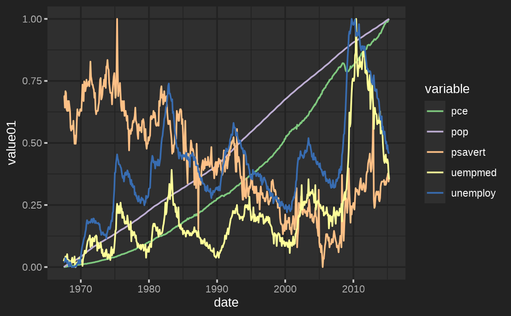

In the auto theming article, we learned that
calling thematic_on() with no arguments applies auto
coloring and that calling thematic_on(font = "auto") adds
in automatic fonts. After reading that article, you may be left
thinking, “What if auto theming doesn’t theme stuff exactly the way I
want it to?” This article helps address that question by demonstrating
how to do customized “high-level” theming with thematic
as well as “lower-level” theming targeted specifically at
ggplot2, lattice, and
base graphics. In other words, we’ll first learn how to
use thematic’s theming interface to set global
defaults, then learn how to override those global defaults in
plot-specific code.
Theming with thematic
Main colors
From the function signature of thematic_on(), we can see
the three main colors of a thematic theme, which all
default to a special value of "auto".
thematic_on(
bg = "auto", fg = "auto", accent = "auto", font = NA,
sequential = sequential_gradient(), qualitative = okabe_ito()
)However, these arguments also accept any valid R (or CSS) color string. So, to “opt-out” of auto coloring, just specify the colors:
library(ggplot2)
thematic_on(bg = "#222222", fg = "white", accent = "purple")
ggsmooth <- ggplot(mtcars, aes(wt, mpg)) + geom_point() + geom_smooth()
ggsmooth
Similar to how font = NA prevents
thematic from changing any font defaults,
accent = NA prevents accent color defaults (e.g.,
geom_smooth()’s color) from changing.
thematic_on(bg = "#222222", fg = "white", accent = NA)
ggsmoothSequential colorscales
The sequential argument is used to set a new default for
sequential color scales (i.e., scale_fill_continuous()
& scale_color_continuous()). Its default value,
sequential_gradient(), defines a color gradient of
fg -> accent -> bg:
thematic_on(bg = "#222222", fg = "white", accent = "purple")
ggcontour <- ggplot(faithfuld, aes(waiting, eruptions, z = density)) +
geom_raster(aes(fill = density)) +
geom_contour()
ggcontour
To flip the direction of the gradient to bg ->
accent -> fg
thematic_on(
bg = "#222222", fg = "white", accent = "purple",
sequential = sequential_gradient(fg_low = FALSE)
)
ggcontour
If you look carefully, the endpoints of the gradient actually use a
mixture of bg/fg and accent. The
weighting of those mixtures can also be controlled via
fg_weight and bg_weight. Here we make sure the
gradient’s starts at the bg color and ends at the
accent.
thematic_on(
bg = "#222222", fg = "white", accent = "purple",
sequential = sequential_gradient(fg_low = FALSE, fg_weight = 0, bg_weight = 1)
)
ggcontour
If you don’t want sequential to be based on
accent/bg/fg, you can also
provide a vector of color codes defining the gradient.
thematic_on(bg = "#222222", fg = "white", accent = "white", sequential = hcl.colors(10))
ggcontourSimilar to how we opted out of new accent defaults, we
can also opt-out of new sequential defaults
thematic_on(bg = "#222222", fg = "white", accent = "white", sequential = NA)
ggcontour
Qualitative colorscales
In addition to sequential colorscales, thematic also
sets new defaults for qualitative (i.e., discrete) color scales based on
the qualitative argument. The default,
okabe_ito(), is a great color-blind safe option, but
qualitative can be set to any vector of color codes. Here’s
another good color-blind safe palette from https://colorbrewer2.org/#type=qualitative&scheme=Dark2
thematic_on(
bg = "#222222", fg = "white", qualitative = RColorBrewer::brewer.pal(8, "Dark2")
)
ggplot(mtcars, aes(wt, mpg, color = factor(cyl))) + geom_point()
#> Warning: thematic was unable to resolve `accent='auto'`. Try providing an
#> actual color (or `NA`) to the `accent` argument of `thematic_on()`. By the way,
#> 'auto' is only officially supported in `shiny::renderPlot()`, some rmarkdown
#> scenarios (specifically, `html_document()` with `theme!=NULL`), in RStudio, or
#> if `auto_config_set()` is used.
In the event that a ggplot2 plot requires more
colors than provided, it will fallback to the usual
scale_[color/fill]_hue() behavior:
ggplot(mtcars, aes(wt, mpg, color = row.names(mtcars))) + geom_point()
However, for base and lattice
graphics, the qualitative colorscale (i.e., palette()) is
recycled:

Again, to prevent thematic from setting any new
defaults for qualitative colorscales, provide an NA
value
thematic_on(
bg = "#222222", fg = "white", qualitative = NA
)
ggplot(mtcars, aes(wt, mpg, color = factor(cyl))) + geom_point()
Fonts
The font argument accepts a character string specifying
either a font already know to R or a Google Font. When a (new) Google
Font is requested, thematic can automatically download,
register, and cache (prior to plotting) so that Google Fonts “just work”
if the showtext package is installed. In some cases,
some additional setup may be required to get Google Fonts rendering
properly — see the fonts article for more
info.
thematic_on(bg = "#222222", fg = "white", font = "Oxanium")
ggsmooth
font also accepts a font_spec() object
which, among other things, makes it easy to multiply all the font sizes
by a scalar multiple:
thematic_on(bg = "#222222", fg = "white", font = font_spec("Oxanium", scale = 2))
ggsmooth
Theming with ggplot2
Complete themes
Complete ggplot2 themes are theme()
objects that fully specify every possible theme() element.
The default ggplot2 theme, theme_gray(),
is a complete theme, and ggplot2 provides some other
useful complete themes such as theme_bw(),
theme_minimal(), and theme_classic(). As we
saw in the auto theming article, thematic can play
nicely with complete themes so long as they’re set globally. This is
because plot-specific code overrides the defaults that
thematic sets, and so by adding a complete theme to a
plot (i.e., ggsmooth + theme_classic()) it would override
all the theme()-specific defaults set by
thematic, which likely isn’t what you want.
ggplot2::theme_set(ggplot2::theme_classic())
thematic_on(bg = "#222222", fg = "white")
ggsmooth
# Now go back to the default
ggplot2::theme_set(ggplot2::theme_gray())
Other ggplot2 extension packages such as ggthemes also provide useful complete themes. The image below links to a Shiny app that allows you to preview how various ggthemes themes look both before and after thematic in a Shiny app with some custom CSS.

Partial themes
thematic_on() sets a new “complete” theme()
default based on bg, fg, and font
(based on a modified version of theme_gray()). Since this
theme is “complete”, you probably don’t want to mix it with other
complete themes (e.g., theme_bw()), but you can definitely
override particular aspects with theme().
thematic_on(bg = "#222222", fg = "white")
p <- ggplot(mtcars, aes(wt, mpg)) +
geom_point() +
facet_wrap(~cyl)
p + theme(strip.background = element_rect(fill = "purple"))
By the way, it’s worth noting that thematic uses a fairly arbitrary
amount of mixture between the fg and bg to set
the theme. If you wanted different mixture(s) of fg and
bg, then thematic_get_mixture() is useful:
my_theme <- theme(
panel.background = element_rect(fill = thematic_get_mixture(0.6)),
strip.background = element_rect(fill = thematic_get_mixture(0.3)),
strip.text = element_text(color = thematic_get_mixture(1))
)
p + my_theme
Geom defaults
For each relevant Geom (e.g., GeomPoint),
new Geom$default_aes defaults are set (based on
bg, fg, accent, and
font). Grayscale colors (e.g.,
GeomPoint$default_aes$color) are assigned a mixture of
bg and fg whereas non-grayscale colors (e.g.,
GeomSmooth$default_aes$color) are assigned the
accent color. It’s important to note these are just global
defaults that only take effect if the aesthetic hasn’t been
specified:
ggplot(mtcars, aes(wt, mpg)) +
geom_point(color = "red") +
facet_wrap(~cyl)
Scale defaults
thematic_on() sets a new
scale_fill_continuous() and
scale_color_continuous() defaults (based on
sequential). See the previous section for an extensive
discussion on how sequential works and note that adding a
relevant (continuous) scale renders sequential
irrelevant:
ggplot(faithfuld, aes(waiting, eruptions, z = density)) +
geom_raster(aes(fill = density)) +
scale_fill_gradient2(midpoint = 0.02)
It also defines new scale_fill_discrete() and
scale_color_discrete() defaults (based on
qualitative). As with sequential colorscales,
adding a relevant (discrete) scale renders qualitative
irrelevant:
ggplot(economics_long) +
geom_line(aes(date, value01, color = variable)) +
scale_color_brewer(type = "qual")
Third party extensions
As a side note, when it comes to third party ggplot2 extension packages, thematic should work as expected (let us know if it doesn’t) as long as those extension packages aren’t hard coding defaults in un-expected ways.

Theming with lattice
thematic also works with lattice;
however, beware that theming decisions are made so that
lattice plots look somewhat similar to
ggplot2 (i.e. panel background is a mixture of
bg and fg instead of just bg).
Also, similar to base graphics,
lattice doesn’t have a global distinction between a
qualitative and sequential colorscales, so
sequential isn’t used in lattice. Instead,
for consistency with lattice’s default, the “regions”
colorscale interpolates between qualitative[1],
bg, and qualitative[2].
(Btw, for lattice, accent may be of
length 2. The first is used for ‘stroke’ and the second for ‘fill’).
# accent may be of length 2 (stroke and fill)
thematic_on(bg = "#222222", fg = "white", accent = c("purple", "red"))
library(lattice)
show.settings()
It might seem strange to have bg define the middle of
the color gradient, but it’s intentional so that it works well with
lattic::contourplot() (or other cases where text wants to
be placed on top of the gradient):
library(stats)
attach(environmental)
ozo.m <- loess((ozone^(1/3)) ~ wind * temperature * radiation,
parametric = c("radiation", "wind"), span = 1, degree = 2)
w.marginal <- seq(min(wind), max(wind), length.out = 50)
t.marginal <- seq(min(temperature), max(temperature), length.out = 50)
r.marginal <- seq(min(radiation), max(radiation), length.out = 4)
wtr.marginal <- list(wind = w.marginal, temperature = t.marginal,
radiation = r.marginal)
grid <- expand.grid(wtr.marginal)
grid[, "fit"] <- c(predict(ozo.m, grid))
contourplot(fit ~ wind * temperature | radiation, data = grid,
cuts = 10, region = TRUE,
xlab = "Wind Speed (mph)",
ylab = "Temperature (F)",
main = "Cube Root Ozone (cube root ppb)")
detach()
Theming with base
Similar to lattice, base R graphics
doesn’t have a global distinction between a qualitative and
sequential colorscales, it just has palette()
(which is closest, semantically, to qualitative):
par(mfrow = c(1, 2))
hist(rnorm(100))
plot(rep(1:5, each = 5), rep(1:5, 5), col = 1:25, pch = 1:25, cex = 5)
However, do know that you can supply the current sequential
colorscale to individual plotting functions by doing something like
col = thematic_get_option("sequential"):
par(mfrow = c(1, 2))
image(volcano)
image(volcano, col = thematic_get_option("sequential"))